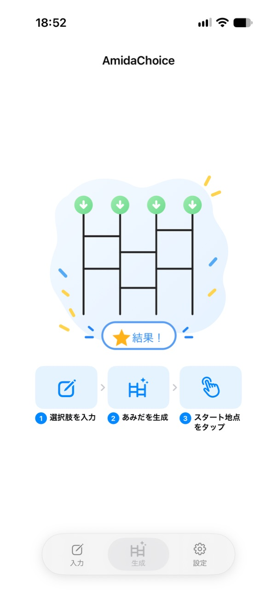
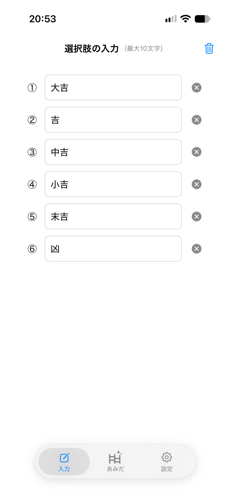
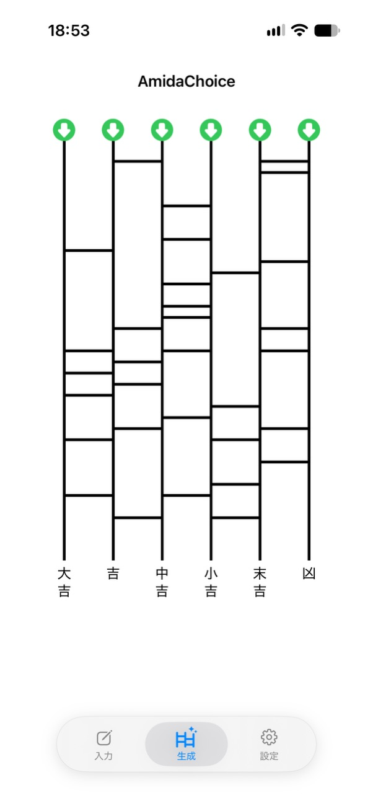
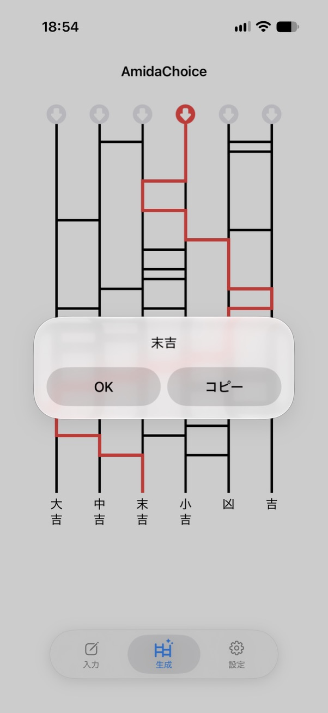
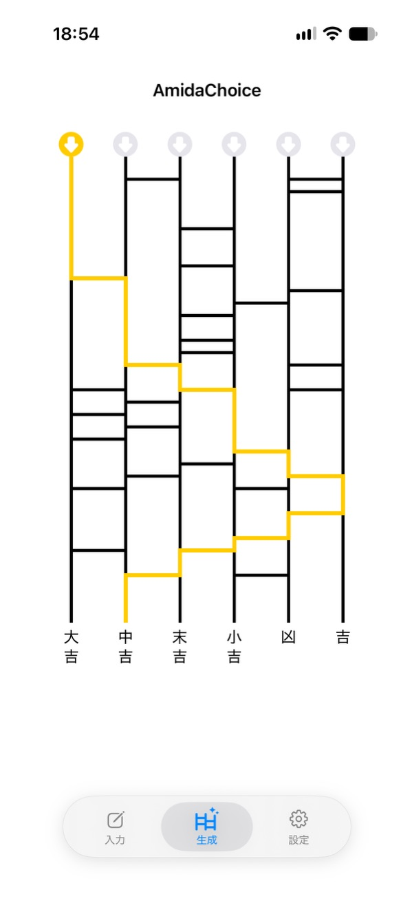
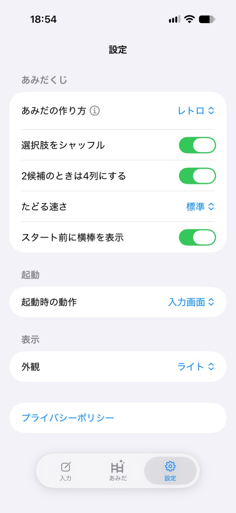

AmidaChoiceの使い方
-
1. 入力画面を開く
画面下部の「入力」ボタンをタップします。

-
2. 選択肢を入力する
選択肢を2〜6個入力します。1つの選択肢は最大10文字です。
入力が終わったら、画面下部の「あみだ」ボタンをタップします。
あみだ画面に切り替わり、あみだくじが自動的に生成されます。

-
3. あみだを選んでスタートする
生成されたあみだが気に入らない場合は、画面下部の『生成』ボタンをタップするか、あみだを下に引っ張ると作り直せます。
好きなあみだができたら、画面上部の点滅する緑色の矢印をタップします。
選んだ地点から自動的に経路をたどります。

-
4. 結果を確認する
経路をたどり終えると、ゴール地点の選択肢が表示されます。
- 「OK」：結果を閉じます。
- 「コピー」：結果をクリップボードにコピーして閉じます。

-
5. もう一度試す
結果を閉じたあと、別のスタート地点をタップすると、同じあみだくじで別の経路をたどれます。
あみだの横棒の配置は変わりません。
新しいあみだくじでやり直したい場合は、画面下部の『生成』ボタンをタップします。

-
6. 設定を変更する
画面下部の「設定」ボタンから、あみだの動作や表示を変更できます。

- あみだの作り方
- レトロ／ネオの生成方式を選択できます。
- 選択肢をシャッフル
- ゴール地点の選択肢の並び順をランダムに変更します。
- 2候補のときは4列にする
- 2つの選択肢でも4列のあみだを表示します。
- たどる速さ
- 経路をたどるアニメーションの速度を変更できます。
- スタート前に横棒を表示
- スタート地点を選ぶ前に横棒を表示するか設定できます。
- 起動時の動作
- アプリ起動時に表示する画面を選択できます。
- 外観
- ライト／ダーク／システムに合わせた表示を選択できます。